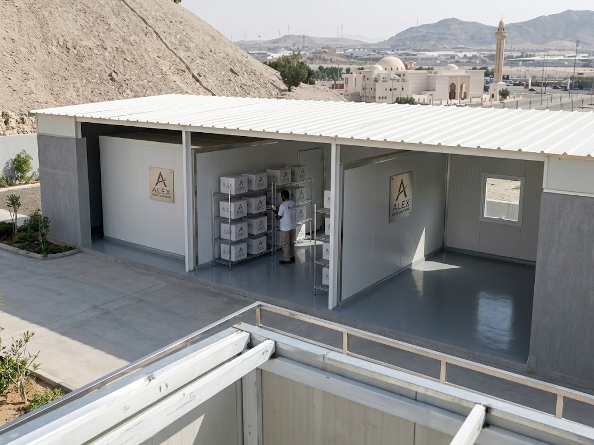
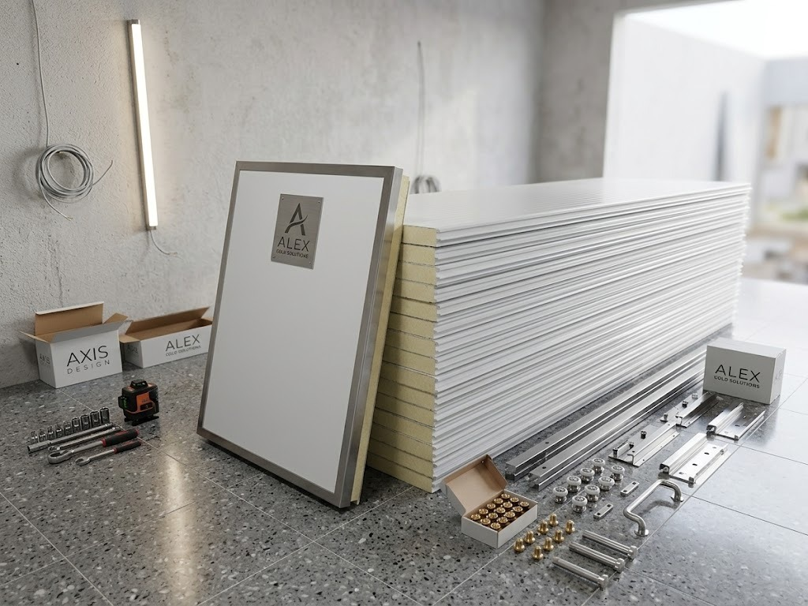

تصميم حسب المقاس
تحديد الطول والعرض والارتفاع وتوزيع المساحة وفق الاستخدام.
تحديد الطول والعرض والارتفاع وتوزيع المساحة وفق الاستخدام.
تنسيق الهيكل وتركيب ألواح الساندوتش بانل حسب التصميم المتفق عليه.
تحديد مواضعها وأبعادها بما يناسب وظيفة الغرفة.
تنسيق الوصول والتركيب حسب حجم العمل وإمكانية الموقع.
استخدامات مناسبة
يمكن مناقشة غرف ومكاتب مؤقتة، كبائن مواقع العمل، غرف الحراسة، غرف الخدمات أو مساحات تخزين خفيفة. يتحدد الحل المناسب بعد معرفة الاستخدام الفعلي والموقع، بما في ذلك احتياجات العزل والتشطيب المطلوبة دون افتراض مواصفات غير مؤكدة.
أرسل الاستخدام والموقع والصور والمقاسات المتوفرة.
نراجع الموقع والأبعاد والخامات والأبواب والنوافذ والفتحات.
تُحدد التفاصيل والتكلفة بعد اكتمال متطلبات المشروع.
يتم تجهيز العمل وتنسيق نقله وتركيبه حسب إمكانية الموقع.
صور الخدمة
صور توضح أشكالًا واستخدامات وعناصر مرتبطة بالخدمة.



تحديد السعر
لا يوجد سعر ثابت قبل معرفة الاستخدام والموقع. يعتمد السعر النهائي على المقاس ونوع الألواح والسماكة والمواصفات المطلوبة والهيكل والأبواب والنوافذ والفتحات والتشطيبات وكمية العمل وموقع التركيب.
أرسل تفاصيل المشروعأبعاد الغرفة وعدد الوحدات.
النوع والسماكة ومتطلبات الاستخدام.
التجهيز والأبواب والنوافذ وتوزيعها.
إمكانية الوصول والتركيب والمتطلبات النهائية.
قبل طلب الخدمة
إجابات تساعدك على تجهيز تفاصيل المشروع.
يمكن استخدامها، وفق التصميم المطلوب، كغرف خدمات أو مكاتب مؤقتة أو كبائن مواقع عمل أو غرف حراسة أو مساحات تخزين خفيفة.
نعم، تُراجع أبعاد الموقع والاستخدام وتوزيع الأبواب والنوافذ قبل اعتماد المقاسات والتصميم.
يمكن تنسيق النقل والتركيب في موقع العميل داخل مكة حسب إمكانية الوصول وطبيعة الموقع وحجم العمل.
يمكن تحديد مواقع الأبواب والنوافذ والفتحات ضمن التصميم بعد مراجعة الاستخدام والمقاسات المطلوبة.
يعتمد السعر على المقاس ونوع الألواح والسماكة والمواصفات المطلوبة والهيكل والأبواب والنوافذ والتشطيبات والكمية وموقع التركيب.
تواصل عبر الاتصال أو واتساب وأرسل موقع العمل وصوره والمقاسات التقريبية والاستخدام المطلوب لتحديد الخطوة التالية.
ABU JASSAR
أرسل موقع العمل وصوره والمقاسات التقريبية والاستخدام المطلوب.